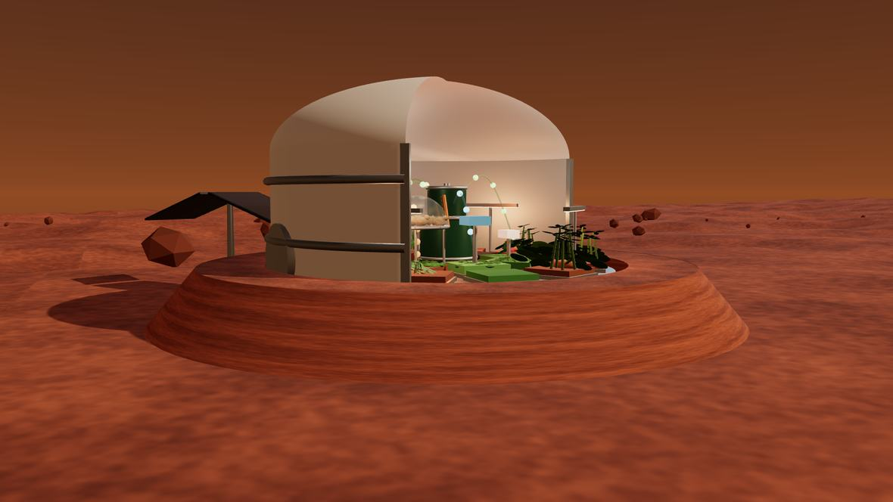
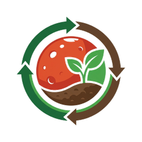

01
0:00 · APERTURA
MILPA-360 · BIOMARS CHIAPAS
En Marte no puedes
mover el rebaño,
así que
mueves el suelo.

MILPA-360
Un carrusel de bandejas de regolito que gira bajo estaciones biológicas fijas. El pastoreo rotacional de Chiapas, invertido y comprimido en 10 m².
BIOMARS CHIAPAS · SEMBRANDO VIDA, RECICLANDO EL FUTURO
Mars Challenge 2026 · The Grand Jam · Elemento Tierra · Reto Unificado UNACH · Chiapas · 8–9 de septiembre de 2026